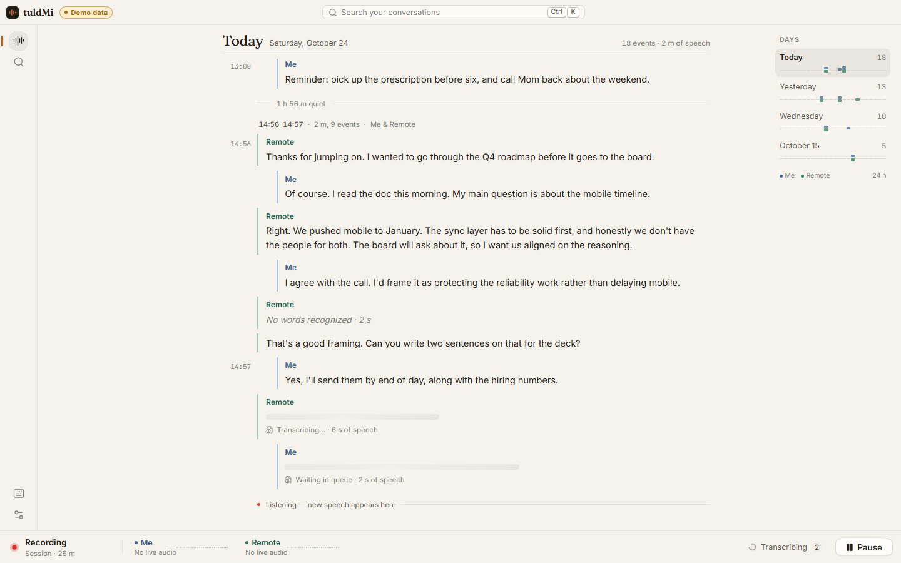
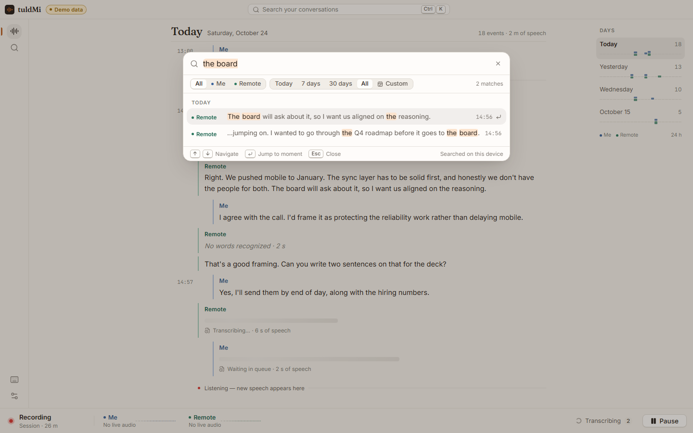
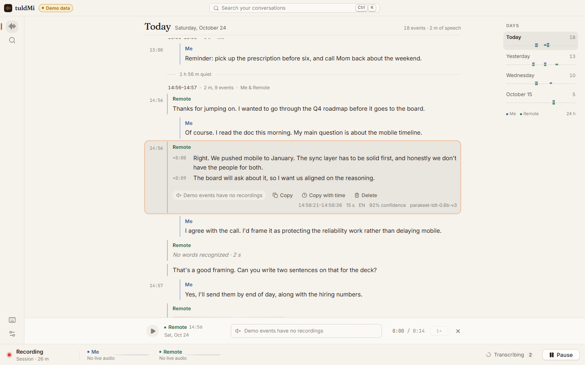
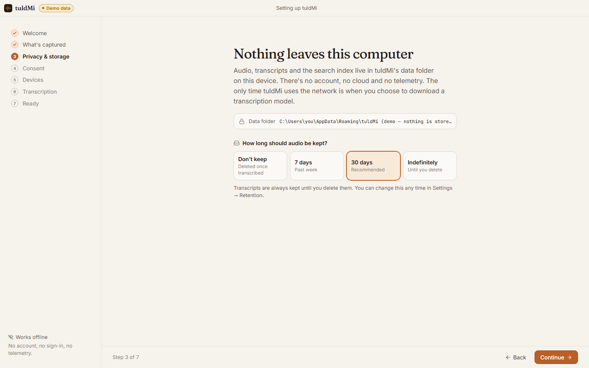
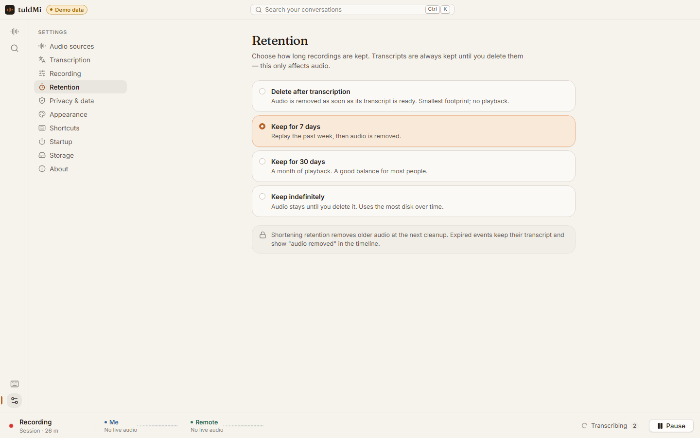

- You remember to press Record, or invite a bot
- Audio goes to a server to be transcribed
- A summary decides what mattered
- Covers scheduled meetings, not the quick call
Ambient audio memory · on your own computer · free
Your conversations, remembered.
tuldMi sits quietly in your tray, keeps only the speech from your microphone and your computer’s audio, and transcribes it right on your PC. The detail from Tuesday’s call is a few keystrokes away, and none of it ever leaves your device.
Why it exists
Not a meeting bot.
A memory.
Meeting tools want a Record button, a bot in the call, and an AI summary sitting on someone else’s server. They also only work for meetings, and most of what you need to remember wasn’t said in one.
tuldMi is the quiet opposite. It never joins anything. It just keeps a plain, exact, timestamped record of what was said around your computer, from the five-minute call to the thing you said to yourself, and lets only you search it.
- Always there in the tray; pause any time
- Transcribed on your own CPU; nothing is uploaded
- The exact words, with your side and theirs kept apart
- Every conversation, findable in a keystroke
How it works
Keep the speech.
Forget the silence.
Everything below happens on your computer, on background threads that never wait for each other. If transcription falls behind, recording carries on and the backlog waits safely on disk.
Listen
Your microphone becomes Me and whatever your computer plays becomes Remote, kept as separate tracks. Pausing closes the devices: nothing is captured at all.
Keep only speech
A voice-activity model (Silero) runs on your device. Silence is never written. 300 ms before and 700 ms after each burst are kept so no word loses its edges, and long speech is split with overlap.
Transcribe locally
whisper.cpp turns each clip into text on your CPU, with a model you chose and downloaded once. No cloud speech service is ever involved.
Find it again
Full-text search across everything, with highlights, Me/Remote and date filters, and a jump straight to the moment. Play back the audio you kept, at any speed.
microphone (Me) + system audio (Remote), as two tracks → 16 kHz mono → speech detection → speech clips → Ogg Opus on disk (about 3 KB per second of speech) → whisper.cpp, on your CPU → SQLite + full-text index → timeline · search · playback
The app
Calm, quick,
made with care.
A chronological timeline instead of a table. Your side and theirs in two restrained colors. A command-palette search. Light and dark that follow your system. It feels good to use even before you’ve recorded anything.
These screenshots use tuldMi’s built-in demo data, which the app always labels with a “Demo data” badge. The conversations are made up.

A timeline, not a table
Grouped by day and conversation, with quiet stretches collapsed to a single line. New speech arrives without yanking you away from what you’re reading; a “Back to live” pill takes you home.

Ctrl+K, type, jump
Instant full-text search with highlighted matches and filters. Enter takes you to the exact moment.

Every sentence, on the clock
Open any moment for per-sentence timing, copy it with or without timestamps, play it back, or delete it.

Setup that explains itself
Seven short steps: what’s captured, where it lives, consent, a live device test, and the model you want.

You decide how long
Delete audio as soon as it’s transcribed, or keep 7 days, 30 days, or forever. Transcripts are kept separately, until you delete them.Privacy
Nothing leaves
this computer.
tuldMi records conversations, so privacy isn’t a feature; it’s the product. Here is exactly what happens, including what it doesn’t protect yet.
No account. No cloud. No telemetry.
No sign-in, analytics, crash reporting or cloud processing. Logs record technical events only, never transcript text or audio.
One network request, ever
Downloading the transcription model you pick, from Hugging Face, only when you click Download. The size is shown first and the file is checked against its SHA-256 hash.
Always visible, instantly stoppable
The tray icon shows recording, paused, or device trouble. Pause from the tray, the window, or Ctrl+Shift+`. Closing the window keeps listening, and the first time, tuldMi tells you so.
Yours to export or erase
Export to Markdown or JSON. Delete one conversation, just its audio, or all of your history. Deleting removes the database rows and the audio files.
| Transcripts, settings, search index | %APPDATA%\com.spillerstech.tuldmi\tuldmi.db |
|---|---|
| Speech audio you keep | %APPDATA%\com.spillerstech.tuldmi\audio\ |
| Transcription models | %APPDATA%\com.spillerstech.tuldmi\models\ |
| Logs (no transcript text) | %APPDATA%\com.spillerstech.tuldmi\logs\ |
Not yet: encryption at rest. In v0.1.0 the database and audio are protected by your Windows account and disk encryption (such as BitLocker) only, so anyone who can sign in as you can read them. Database and audio encryption with OS-keychain keys is planned, and tuldMi won’t show an “encrypted” switch until it really protects your data.
This page keeps the same promise: no trackers, no analytics, and no third-party fonts or scripts. The full privacy document
In the box
Small download.
Complete product.
Everything in the first release works on real audio. Anything that isn’t ready is listed honestly below, not hidden behind a switch that does nothing.
Two tracks, never mixed
Your mic and your computer’s audio stay separate from capture to search, so you always know who said it: you, or the other side.
Local transcription
Five Whisper models from 74 MB to 547 MB, English or about 99 languages. Download one; switch any time.
Never loses a word
Recording keeps going while transcription catches up. Interrupted work resumes after a restart, and failed clips can be retried.
Instant search
A full-text index with highlights, source and date filters, and jump-to-moment, from the palette or a full search view.
Playback
A docked player with a scrubbable waveform and speed control for any audio you chose to keep.
Tray-first
Runtime-drawn state icons, pause and resume, per-source status and backlog, launch at login if you want it.
Follows your devices
Choose devices or follow the Windows default; tuldMi recovers automatically when a device disappears.
Designed settings
Sources, models, speech detection, retention, privacy, appearance, shortcuts and storage use, each on its own page.
Honest about v0.1.0
What it doesn’t
do yet.
- Windows only. macOS and Linux are designed for but not built yet.
- No speaker identification. “Remote” is everything your computer plays; individual people on a call aren’t told apart.
- No encryption at rest (see above).
- CPU transcription only. Large models are slow on modest processors; the default model is a good balance.
- Very long histories get heavy. Many thousands of events will slow the timeline down until it is virtualized.
- Unplugging a device and switching the default device are handled and tested with a simulated device, but not yet on real hardware.
Download
Installed in
a minute.
A per-user installer: no administrator rights needed. The installer, the app and the uninstaller are all code-signed and timestamped.
Download
tuldMi_0.1.0_x64-setup.exeand its.sha256from the release page.Check it (optional)
The signature should be
Validand signed byCN=Joseph Spillers. As a new publisher, SmartScreen may still ask before the first run.Run it, then follow setup
Pick your devices, try the live level test, and download a model. That’s it: tuldMi is listening from the tray.
# in your Downloads folder
Get-AuthenticodeSignature .\tuldMi_0.1.0_x64-setup.exe
Get-FileHash .\tuldMi_0.1.0_x64-setup.exe
Get tuldMi 0.1.0 for Windows
| Windows 10/11 x64 | Supported |
|---|---|
| macOS | Not yet |
| Linux | Not yet |